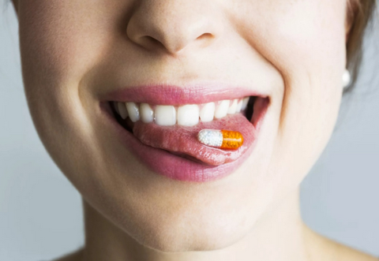

Обзор наиболее важных витаминов для предотвращения проблем с зубами и деснами. Описание витаминов, укрепляющих зубную эмаль и защищающих от воспаления десен, а также их основных источников в пище.
Белоснежная и лучезарная улыбка – естественное желание каждого человека. Крепкие и здоровые зубы являются залогом красоты и уверенности в себе. Однако в современном мире человек постоянно находится в состоянии дефицита витаминов из-за тотального употребления продуктов длительного хранения, а зубная эмаль подвергается постоянному воздействию вредных факторов.

Восполнение дефицита определенных микроэлементов может стать ключом к сохранению здоровья зубов и десен. Сегодня лучшие витамины для зубов способны укрепить зубную эмаль, предотвратить развитие кариеса и защитить десны от воспаления и кровоточивости.
Чтобы обеспечить зубы и десны полноценным питанием, необходимо знать, какие витамины необходимы для их здоровья и как их правильно употреблять. Сегодня мы поговорим о жизненно важных витаминах, которые помогут сохранить улыбку в идеальном состоянии на долгие годы.
Витамины для зубной эмали
Крепкая и здоровая зубная эмаль – неприступная крепость для зубов, защищающая их от разрушительного воздействия кариеса и других вредных факторов. Ключевую роль в формировании и укреплении эмали играют следующие витамины:
Обеспечив организм достаточным количеством этих витаминов, вы укрепите зубную эмаль, сделав ее более стойкой к воздействию кислот и бактерий, провоцирующих развитие кариеса.
Витамины для десен
Красивая улыбка невозможна без здоровых десен. Для поддержания десен в оптимальном состоянии необходимы следующие витамины:
Употребление продуктов на регулярной основе, богатых этими витаминами, поможет сохранить здоровье и красоту десен.
Заключение
Зубы и десны нуждаются в постоянном питании и заботе. Включив в свой рацион продукты, насыщенные витаминами D, A, группы B, C, E и K, вы обеспечите крепость зубной эмали и здоровье десен. Помните, что правильное сбалансированное питание является ключом к яркой и безупречной улыбке на долгие годы. Обогатите свой рацион источниками питательных веществ для максимального укрепления зубов и десен.
Advanced Data Line